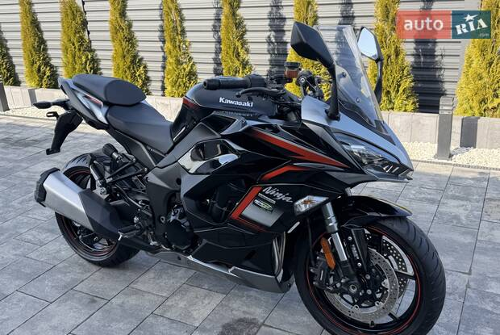

Мене звати Денис. Я навчаюся в КПІ, а раніше навчався в Гореницькій школі.
Я хотів би мати такі мотоцикли:
Та такі авто:
Я знаю, що вода — це H2O, а площа квадрата — a2.
Реве та стогне Дніпр широкий
Сердитий вітер завива,
Додолу верби гне високі,
Горами хвилю підійма.
Ось посилання на мій улюблений мотоцикл🔎
А це його зображення:
